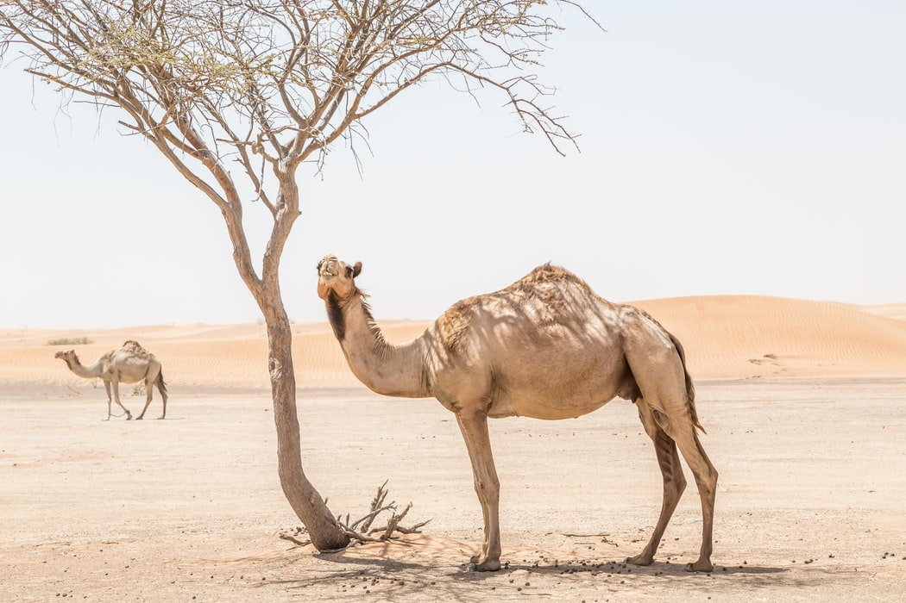

Camel As Specie
The age-old camel debate is: one hump or two? Arabian camels,
commonly known as dromedaries, have just one hump but make good
use of it. When food is scarce, the hump may store up to 80 pounds
of fat, which a camel may break down into water and energy. These
humps are responsible for camels' famous capacity to travel up to
100 arid kilometers without water. Camels seldom sweat, even in
desert temperatures as high as 120°F, so when they do consume
fluids, they can store them for extended periods of time. Even
desert plants may retain enough moisture in the winter to keep a
camel alive for several weeks without water.

Desert Adaptations
Other modifications allow dromedaries to flourish in arid
environments. They have bushy brows and two rows of long eyelashes
to shield their eyes, and their nostrils shut to keep sand out.
They can pick at dry and prickly desert plants because to their
large, strong lips. Large, thick footpads assist them in
navigating the rocky terrain and changing desert sands.
Domestication
For over 3,500 years, Arabian camels have been tamed and have long
been appreciated as pack animals. They may go up to 25 kilometers
per day carrying heavy loads. Some civilizations measure a
person's wealth by the number of camels he or she owns. Today,
virtually all camels on the planet are domesticated. They are
native to northern Africa and southern Asia, and have recently
been imported to Australia.